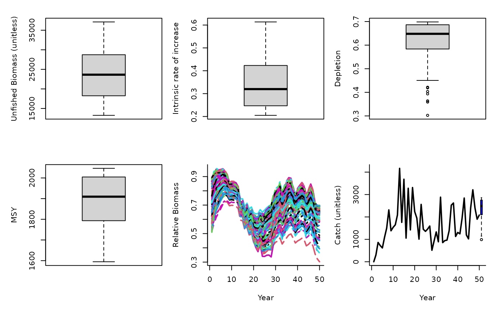

Catch trend Surplus Production MSY MP
SPMSY.RdAn MP that uses Martell and Froese (2012) method for estimating MSY to determine the OFL. Since their approach estimates stock trajectories based on catches and a rule for intrinsic rate of increase it also returns depletion. Given their surplus production model predicts K, r and depletion it is straight forward to calculate the OFL based on the Schaefer productivity curve.
Details
The TAC is calculated as: $$\textrm{TAC} = D K \frac{r}{2}$$ where \(D\) is depletion, \(K\) is unfished biomass, and \(r\) is intrinsic rate of increasase, all estimated internally by the method based on trends in the catch data and life-history information.
Requires the assumption that catch is proportional to abundance, and a catch time-series from the beginning of exploitation.
Occasionally the rule that limits r and K ranges does not allow r-K pairs to be found that lead to the depletion inferred by the catch trajectories. In this case this method widens the search.
Required Data
See Data-class for information on the Data object
References
Martell, S. and Froese, R. 2012. A simple method for estimating MSY from catch and resilience. Fish and Fisheries. DOI: 10.1111/j.1467-2979.2012.00485.x
See also
Other Surplus production MPs:
Fadapt(),
Rcontrol(),
SPSRA(),
SPmod(),
SPslope()
Examples
SPMSY(1, Data=MSEtool::SimulatedData, plot=TRUE)

#> TAC (median)
#> 2475.961